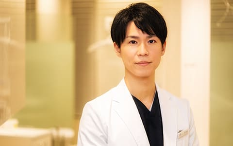
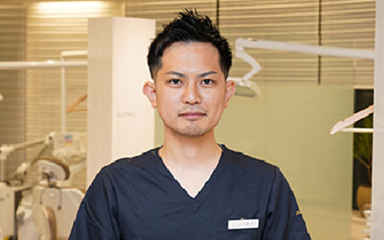

- 新宿の歯医者・矯正歯科「新宿ルーブル歯科・矯正歯科」TOP
- 院長あいさつ・スタッフ紹介
理事長紹介

新宿ルーブル歯科・矯正歯科は、渋谷にも歯科医院を構える法人医院です。
患者さまとの「コミュニケーション」を大切に、「歯のプロフェッショナル」として「患者さまの未来を考えた治療」をご提案しています。
当院では「80歳になってもご自分の歯で過ごして欲しい」から、審美面と機能面を両立させた治療を行っています。
歯医者に対して、「怖い」とマイナスのイメージを持つ方も多いですよね。
でも、当院は「気軽に相談できる歯のコンシェルジュ」。
身近に感じていただける歯科医院づくりを大切にしています。
新宿駅東口直結・徒歩1分で通いやすく、どんなお悩みにも丁寧に対応。
「患者さまにご満足いただける治療」を行います。
患者さまの「健康寿命」が延び、健康な歯でいつまでも笑顔でいられるようにお手伝します。
理事長水谷 倫康
略歴
- 愛知学院大学歯学部卒業
- しんファミリー歯科 矯正監修
- 大手審美歯科クリニック 代診勤務医
- 医療法人清翔会 エスカ歯科・矯正歯科 院長就任
- 渋谷ルーブル歯科・矯正歯科 独立開業
- 医療法人社団 ルーブル設立 理事長就任
- 新宿ルーブル歯科・矯正歯科 開業
所属団体
- 厚生労働省認定 臨床研修 指導医
- インビザライン社公認 ダイヤモンドプロバイダー
- インビザライン(マウスピース矯正)認定医
- インコグニート舌側矯正 認定医
- winシステム舌側矯正 認定医
- 日本矯正歯科学会 所属
- 日本成人矯正歯科学会 所属
- 日本顎咬合学会 認定医
- 日本外傷歯学会 認定医
- 日本アンチエイジング歯科学会 認定医
- 日本歯科審美学会 所属
- MRCセミナー(矯正)・BSCセミナー(矯正) 受講
- オステム・カムログインプラントアドバンスコース 受講
- コルチコトミー・コルチシジョンセミナー 受講
- 月星歯科CEセミナー・ダイレクトボンディングセミナー 受講
- MDIベーシックセミナー 受講
- VISTAテクニック(歯周外科)セミナー 受講
- アライナー矯正治療コース 受講
院長紹介

歯科治療の基本は、「患者さまが何を望んでいらっしゃるのか？」を考えること。
「患者さまとのコミュニケーション」を通して丁寧に確認していく姿勢を大切にしているんです。
患者さまから信頼いただき、感謝していただける歯科医師でありたいと考えています。
そのためには、患者さまの考えを丁寧にお聞きし、「QOLの向上につながるご提案」をすることが大切。
患者さまと話し合いながら、ベストな治療をご提案する姿勢が大切ですよね。
当院ではそのような考えのもとで、「患者さまの心に寄り添った治療」を心がけているんです。
患者さまの不安をしっかりと取り除き、治療によってお悩みを解決していくこと。
そして、「新宿ルーブル歯科・矯正歯科を選んで良かった」と思っていただくことこそが、一番の喜びです。
略歴
- 愛知学院大学歯学部 卒業
- 歯科医師免許証 取得
- 臨床研修終了 登録
- 渋谷ルーブル歯科・矯正歯科 常勤医師
- 新宿ルーブル歯科・矯正歯科 院長
所属団体
- インビザライン（マウスピース矯正）認定医
院長佐藤 啓介
歯科治療の基本は、「患者さまが何を望んでいらっしゃるのか？」を考えること。
「患者さまとのコミュニケーション」を通して丁寧に確認していく姿勢を大切にしているんです。
患者さまから信頼いただき、感謝していただける歯科医師でありたいと考えています。
そのためには、患者さまの考えを丁寧にお聞きし、「QOLの向上につながるご提案」をすることが大切。
患者さまと話し合いながら、ベストな治療をご提案する姿勢が大切ですよね。
当院ではそのような考えのもとで、「患者さまの心に寄り添った治療」を心がけているんです。
患者さまの不安をしっかりと取り除き、治療によってお悩みを解決していくこと。
そして、「新宿ルーブル歯科・矯正歯科を選んで良かった」と思っていただくことこそが、一番の喜びです。
院長佐藤 啓介
略歴
- 愛知学院大学歯学部 卒業
- 歯科医師免許証 取得
- 臨床研修終了 登録
- 渋谷ルーブル歯科・矯正歯科 常勤医師
- 新宿ルーブル歯科・矯正歯科 院長
所属団体
- インビザライン（マウスピース矯正）認定医
スタッフ紹介

服部 剛大
略歴
- 愛知学院大学歯学部歯学科 卒業
- 歯科医師免許証 取得
- 愛知学院大学大学院歯学研究科修了(口腔病理学専攻)
- 博士(歯学)の学位取得
- 臨床研修終了 登録 医療法人社団ルーブル歯科・矯正歯科 常勤医師
所属団体
- 愛知学院大学歯学会会員
- 日本臨床口腔病理学会員
- 日本顎咬合学会員
- 日本レーザー歯学会員
- 日本口腔インプラント学会員
- 歯科基礎医学会員
- 硬組織再生生物学会員
- 日本口腔腫瘍学会員